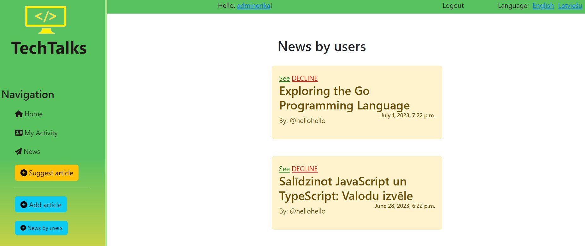

It is also the first time I used version control GIT and realized how convenient it is.
P.S. all the articles were generated by ChatGPT and are just examples.
Home page
The website stores different articles about different topics from IT world. Unauthorized users have access to see the home page and read articles and comments. Admins can post any article they want, however authorized users can suggest their articles and track its status, which will be changed depending on whether admin decides to post it or not. Admin can also edit/delete any article.Authorized user profile

Admin profile. Clicked on "News by users"
User`s profile page.
The "accepted" article I added through admin panel in order to test it. That is why it has a picture.
Articles are also separated into different categories, which are stored in DB and can be added/deleted by admin.Clicked on "News"
For authorized users the comment section is also be available, and an opportunity to like posts they want. For the LIKE button I used AJAX in order for page not to be reloaded every single time. This was quite a challenge for me.Clicked on "News" ----> Clicked on "Read"
Each authorized user also has "My Activity" page, where they can see what posts they liked, commented and visited."My Activity" page
"My history" is a table in DB, which stores usernames, timestamps, articles.The website also provides two different languages: EN and LV.
Basically, during this project I got good understanding of how views-urls-templates-models interact with each other and also got some experience with GIT.